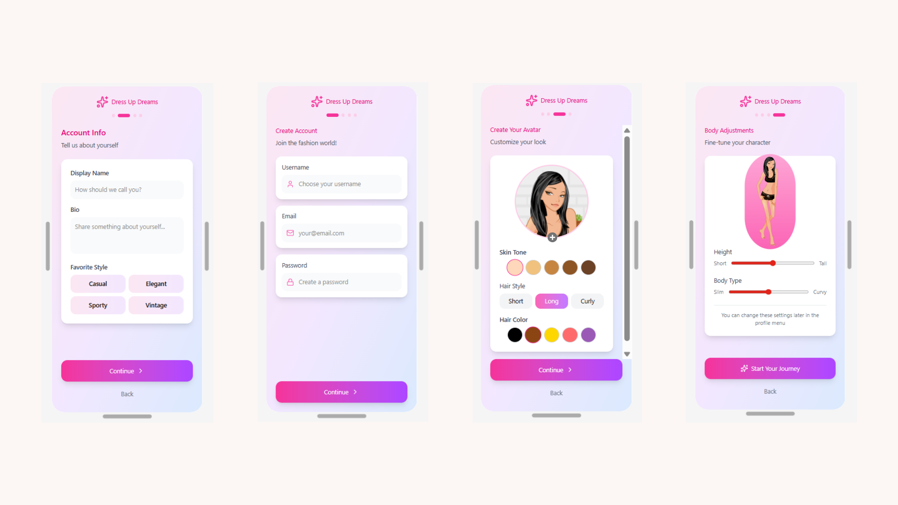

Behavioral Approach of Business Design
I conducted market research and user interviews to identify pain points in wardrobe management and sustainable fashion. I apply nudge theory to design features that subtly guide users towards mindful consumption and outfit choices by charging in the slot added to their game.